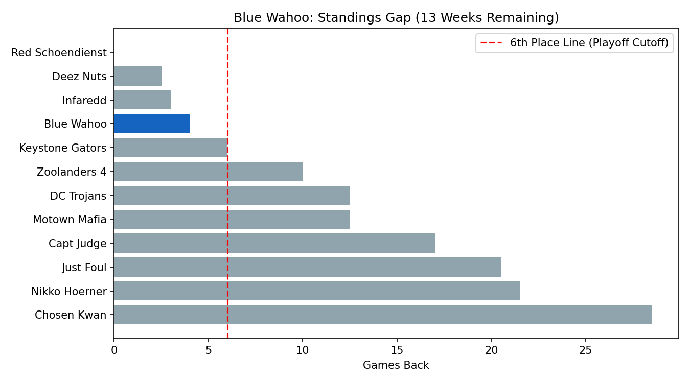
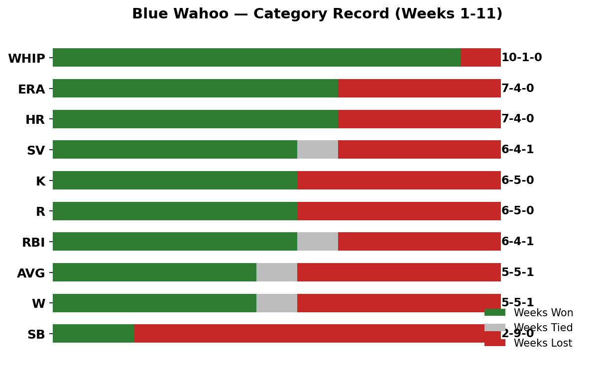

Week 12 Report
Standings & Playoff Outlook
Blue Wahoo sits in 4th place, just 4 games back of 3rd and 6 games back of 1st. With 13 weeks remaining and the playoff cutoff at 6th place, this team is in a strong, secure position — the question isn’t whether you make the playoffs, it’s how high you can climb the seed.

Category Performance (Weeks 1–11)
Each bar shows your record in that category across the first 11 weeks — green is a week won, red is a week lost, gray is a tie. Categories are sorted from your strongest to weakest.

Strengths
- WHIP (10-1-0) — by far your best category. Your pitching staff’s command is elite this season.
- ERA (7-4-0) and HR (7-4-0) — both comfortably winning categories.
- SV, K, R, RBI — all sit at or just above .500, giving you a solid floor most weeks.
Weaknesses
- Stolen Bases (2-9-0) — your single worst category by a wide margin. Outside of Acuña (IL) and Núñez, your roster has almost no speed.
- AVG and Wins (5-5-1 each) — coin-flip categories that often come down to streaming decisions and lineup health.
Roster Snapshot
| Pos | Player | AVG | HR | RBI | R | SB | Note |
|---|---|---|---|---|---|---|---|
| C | Shea Langeliers | .281 | 18 | 36 | 46 | 1 | Strong |
| 1B | Christian Walker | .247 | 18 | 52 | 41 | 0 | Strong power |
| 2B | Gleyber Torres | .282 | 4 | 18 | 26 | 0 | Solid avg |
| 3B | Manny Machado | .178 | 12 | 35 | 32 | 1 | Underperforming AVG |
| SS | Nasim Núñez | .200 | 0 | 20 | 24 | 25 | Elite speed, weak elsewhere |
| OF | Corbin Carroll | .282 | 12 | 34 | 43 | 8 | Elite all-around |
| OF | Jordan Lawlar | .364 | 1 | 4 | 4 | 3 | Small sample, hot |
| OF | Brandon Nimmo | .254 | 7 | 23 | 28 | 2 | Steady |
| Util | Rafael Devers | .234 | 9 | 33 | 33 | 0 | Below norms |
| Util | JJ Bleday | .265 | 11 | 29 | 23 | 2 | Good power |
| BN | Willy Adames | .232 | 11 | 29 | 34 | 1 | Streaky |
| BN | Colton Cowser | .221 | 7 | 23 | 23 | 2 | Low value, drop candidate |
| IL | Ronald Acuña Jr. | .251 | 7 | 22 | 31 | 15 | Stud when healthy |
| IL | Giancarlo Stanton | .256 | 3 | 14 | 8 | 1 | Limited at-bats |
Action Plan: Fix the Stolen Base Hole
Your single biggest lever is stolen bases. Going from a near-automatic SB loss to even a 50/50 category would functionally add close to half a win per week across the league average — that’s the difference between 4th and 1st–2nd over 13 weeks.
Drop
- Colton Cowser (.221 AVG, low ROS%, blocked outfield) — lowest-value bench bat.
Add (from waivers)
- Jose Caballero (NYY) — 15 SB, .259 AVG, multi-position (2B/3B/SS/OF). Best fix for the SB problem.
- Trent Grisham (NYY) — 6 SB, 8 HR, 35 RBI, 40 R — adds speed without sacrificing power.
- Bryson Stott (PHI) — 12 SB, .231 AVG, multi-position (2B/SS).
Trade
Your biggest trade chip is pitching depth (Hancock, Warren, Gausman, Ashcraft, Wheeler, Suarez, Imanaga) — more above-average arms than active slots can use. Target a bottom-half team (Just Foul, Nikko Hoerner, Chosen Kwan, DC Trojans) with a speedster they don’t need, and offer a surplus SP. Avoid trading Carroll, Acuña, Chapman, Ashcraft, or Hancock.
Bottom Line
ERA and WHIP have gone from weaknesses to strengths, validating the pitching staff overhaul. The next phase is simple: fix stolen bases. A single waiver add (Caballero, Grisham, or Stott) replacing Cowser could swing SB from a guaranteed loss to a coin flip — worth 1–2 standings spots by season’s end.